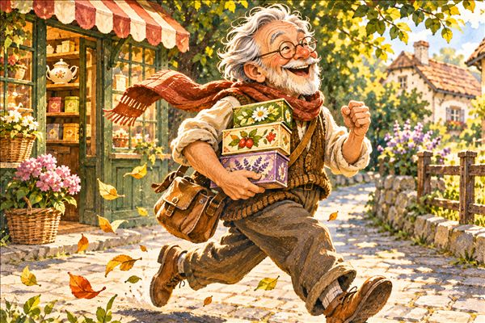

Život zberateľa
Príbehy zo zbierania – ako vrecúška prichádzajú, kto mi ich nosí a čo sa pri tom stane.
Slané pery a dvojsté vrecúško
Hodina v soľnej jaskyni, čaj v rožňavskej cukrárni, tanierik s krúžkom a laskonky, ktoré spadli na zem.

Od 137 k 200
Jedna výstavka, jedna pani učiteľka a tri vrecúška, ktoré chýbali do dvesto. Príbeh o tom, ako vznikla táto stránka.